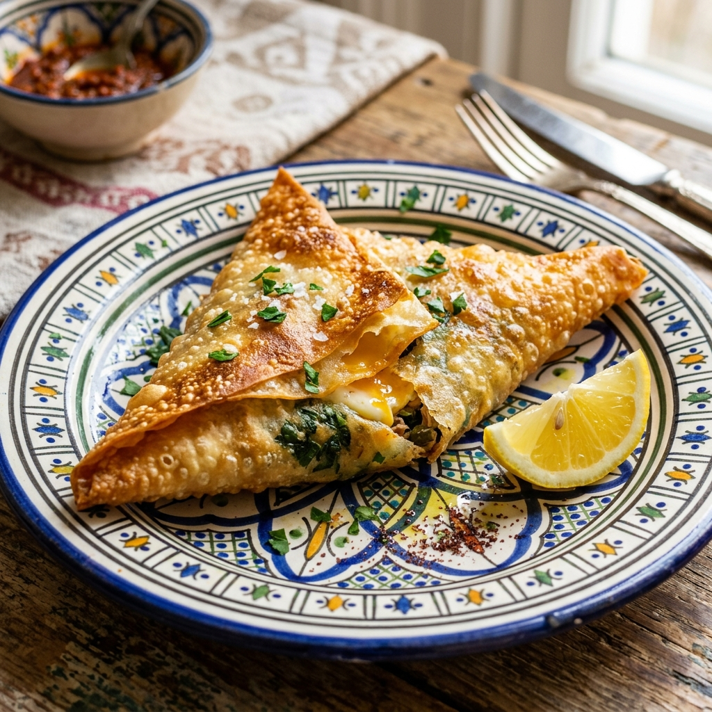
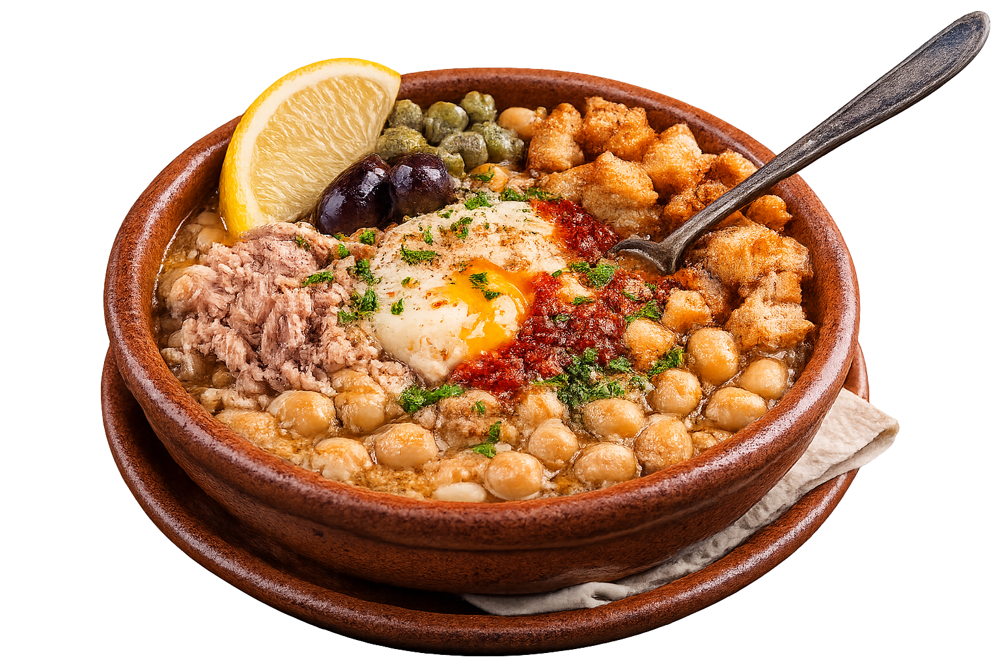
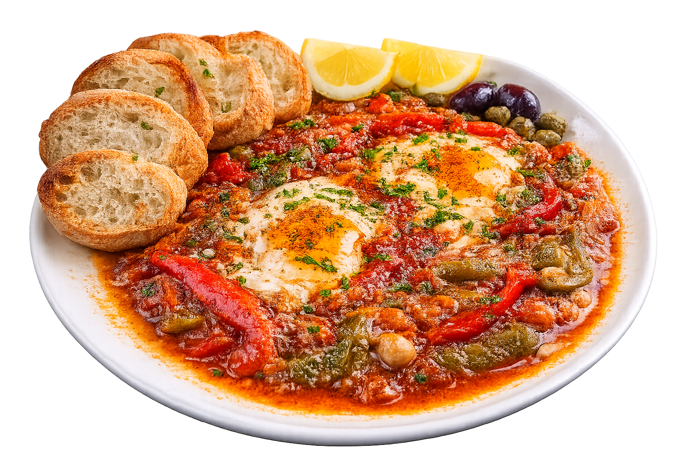
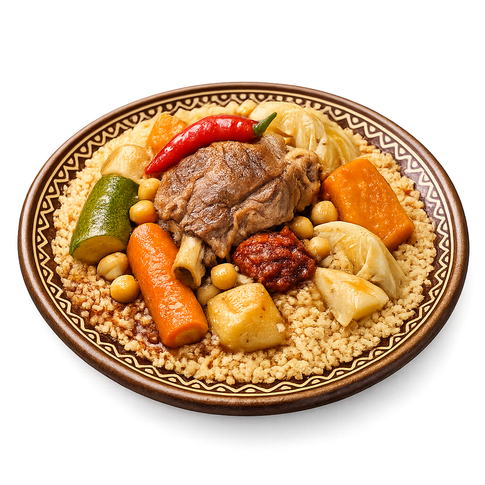
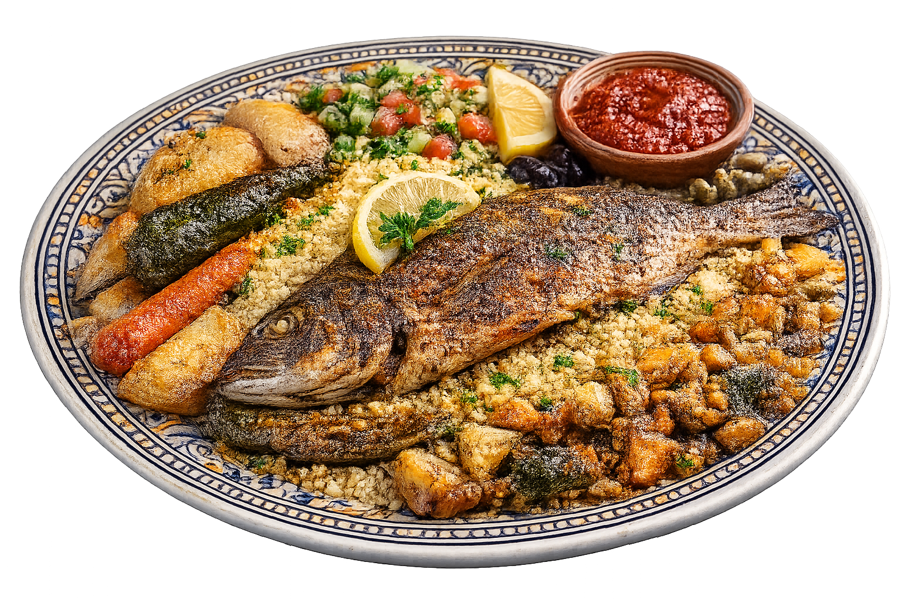
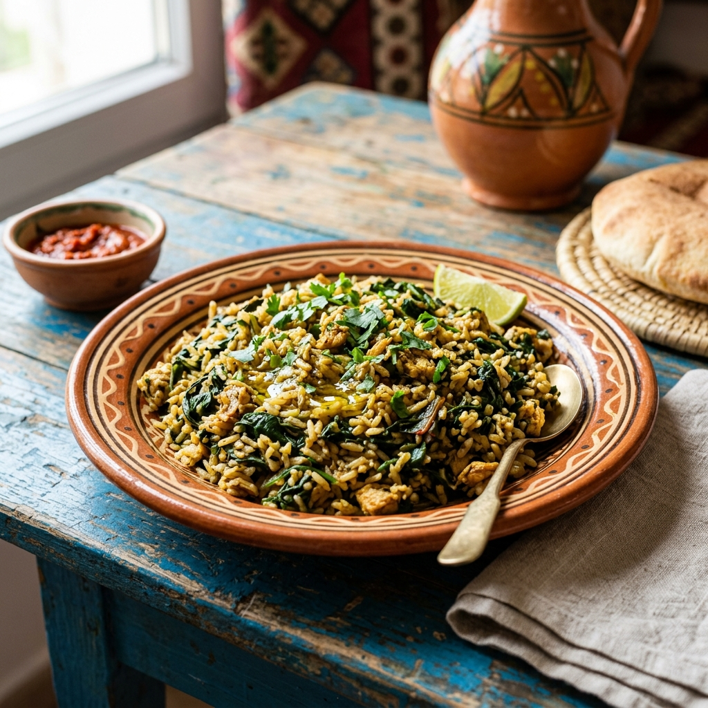
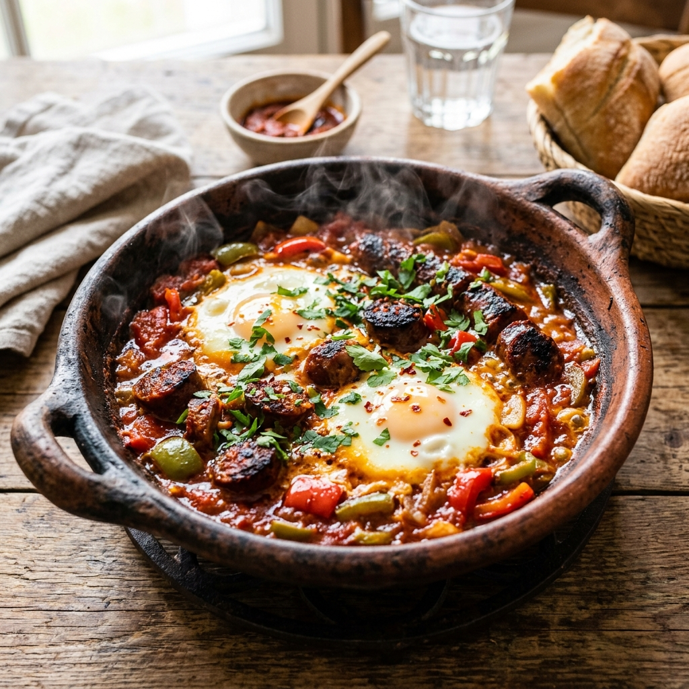
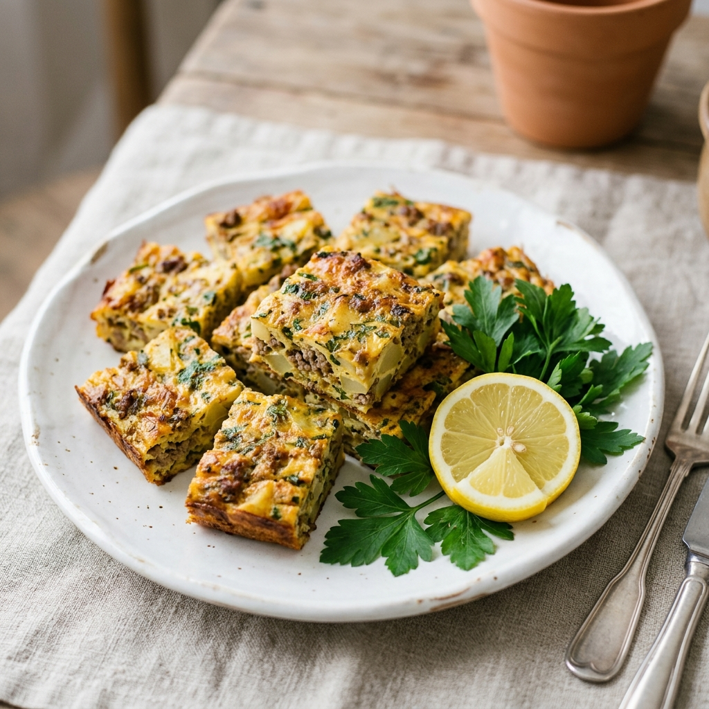
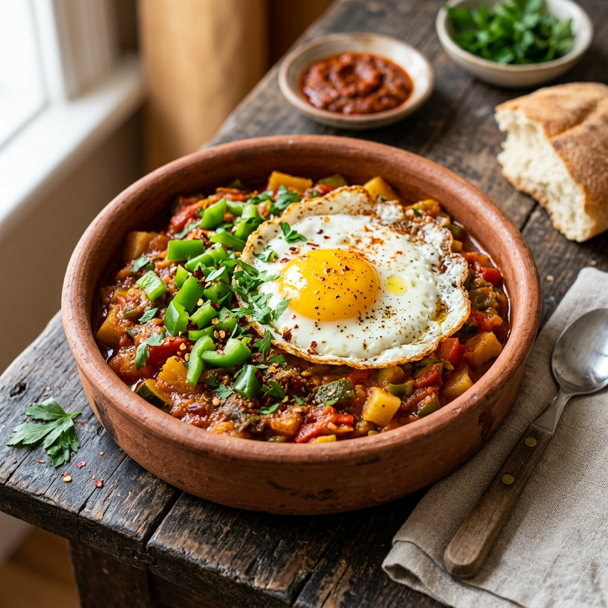
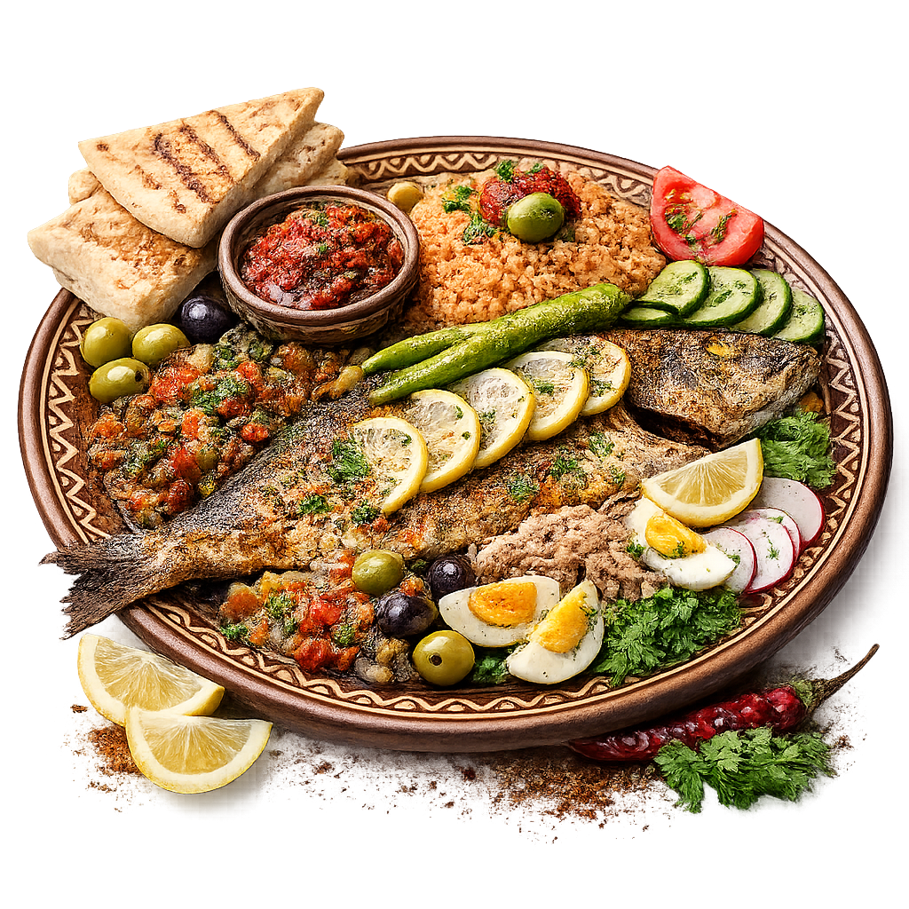

Notre Menu
Tous nos plats sont cuisinés à la commande à partir de produits frais et locaux, relevés d'épices soigneusement sélectionnées et moulues artisanalement. Laissez-vous séduire par l'authenticité de notre terroir.

Feuille de malsouka croustillante garnie d'un œuf coulant, de thon de qualité, d'oignons émincés, de persil frais et de câpres, frite à la minute.
Poivrons doux, tomates et ail grillés sur le charbon, concassés finement et assaisonnés d'huile d'olive extra-vierge, d'épices (tabel) et surmontés de thon.
Soupe traditionnelle tunisienne au blé vert concassé cuit dans un bouillon de tomates fraîches concentré, parfumé à la coriandre sauvage et au céleri.

Soupe de pois chiches fondants mijotés dans un bouillon épicé, garnie de thon, d'un œuf poché, de câpres, d'olives et d'une généreuse cuillère de harissa maison.

Ragoût de poivrons rouges et verts, tomates fraîches et oignons confits, cuit lentement avec des épices orientales, garni d'œufs pochés et servi avec du pain grillé.

Semoule de blé fine cuite à la vapeur au-dessus d'un bouillon aromatique, garnie de morceaux d'agneau fondants, de carottes, de courges et de pois chiches.

Semoule fine cuite à la vapeur, servie avec un poisson entier grillé aux épices tunisiennes, des légumes confits, de la salade méchouia et une sauce harissa maison.

Riz à grains fins cuit à la vapeur, mélangé intimement avec du poulet mariné en dés, des blettes, du persil, des carottes et des épices orientales traditionnelles.

Ragoût mijoté de sauce tomate fraîche, piments verts piquants, harissa locale et épices, garni de merguez artisanales grillées et d'œufs pochés coulants.

Omelette épaisse au four à base d'œufs, poulet émietté, pommes de terre cubes, fromage râpé, persil et épices locales, cuite lentement jusqu'à dorure.

Mélange frit et concassé de légumes frais (courge, pommes de terre, piments, tomates), surmonté d'œufs frits coulants et assaisonné d'huile d'olive.
Plat traditionnel tunisien cuit dans une sauce tomate réduite très parfumée, à base de morceaux de viande d'agneau et de foie, relevée généreusement au cumin.

Poisson entier frais du jour mariné dans un mélange de chermoula tunisienne, grillé au charbon, accompagné de salade méchouia, riz à la tomate, olives et câpres.
Un assortiment royal de nos viandes grillées au charbon de bois : une côtelette d'agneau, une brochette de poulet marinée et une merguez. Servi avec frites et salades.
Quatre côtelettes d'agneau locales juteuses, marinées avec du romarin sauvage et de l'origan frais, grillées à la perfection. Servies avec frites maison croustillantes.
Dés de blancs de poulet tendres marinés dans du jus de citron frais, de l'huile d'olive, du curcuma et des herbes aromatiques, puis passés sur le grill.
Le beignet emblématique tunisien frit sous vos yeux, saupoudré de sucre en poudre fin ou arrosé d'un délicieux miel sauvage doré. Chaud et croustillant.
Thé vert fort et sucré infusé longuement avec des feuilles de menthe fraîche, surmonté généreusement de pignons de pin tunisiens torréfiés et croquants.
...Et bien d'autres délices du jour !
Notre Menu s'enrichit quotidiennement en fonction des arrivages de la criée et du marché. Venez déguster nos plats du jour tels que le Tajine tunisien, le Kafteji fait maison, les Macaronis à l'Agneau (Bel Allouch), ou encore nos poissons grillés selon arrivage.
N'hésitez pas à appeler ou interroger notre équipe pour connaître le menu du jour !